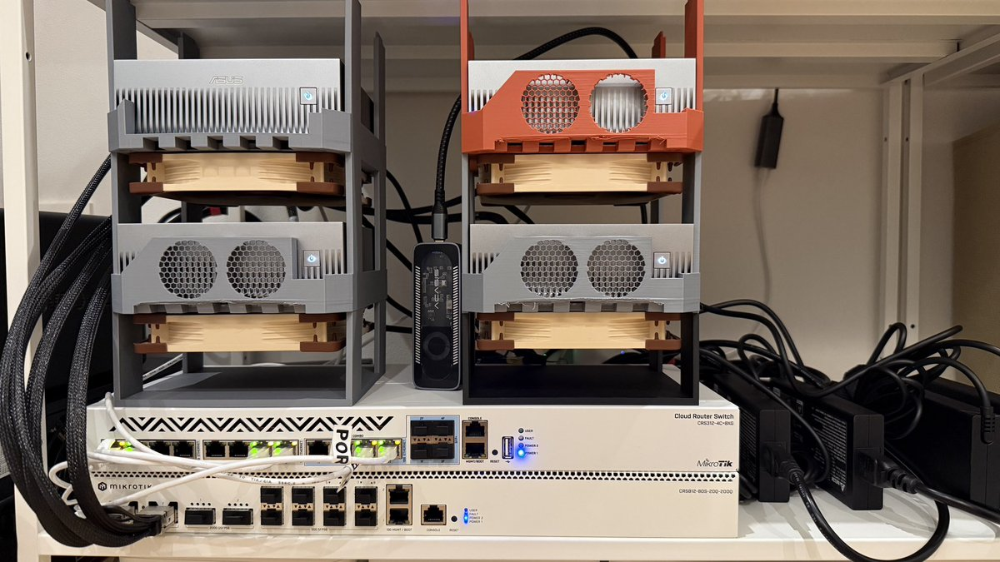

앞선 기록에서 GB10(DGX Spark) 2대를 DAC 한 가닥으로 직결해 196Gb/s 인터커넥트를 만들었다. 노드가 4대가 되면서 직결로는 답이 없어졌고, 스위치를 들였다. 이 글은 그 과정 전체다. 장비와 케이블 선택, 링크가 하나도 안 올라오던 브링업, 그리고 "스위치를 거치면 얼마나 느려지는가"에 대한 실측 답까지.
구성. MikroTik CRS812의 400G QSFP-DD 케이지 2개를 브레이크아웃 DAC로 각각 200G 두 가닥으로 나눠, 케이블 두 가닥으로 4노드를 전부 수용했다. 노드당 케이블은 한 가닥이다.
결과. 모든 노드쌍(6쌍)에서 RDMA 합산 195.7Gb/s. 직결 시절 실측 196.0Gb/s와 사실상 같다. 스위치 경유 손실은 측정 한계 안에서 0이다.
막힌 것 셋. 자동 협상 실패(강제 속도 지정으로 해결), 기본 L2MTU의 점보 프레임 드롭(MTU 상향), 그리고 공장 기본 설정이 패브릭과 관리망을 한 브리지로 묶는 문제(전용 VLAN 격리). 셋 다 스위치 쪽 설정으로 풀린다.
미리 알아둘 것. GB10의 200G NIC은 소켓다이렉트 구조라 PCIe Gen5 x4 경로 두 개가 물리 포트 하나를 나눠 쓴다. 각 경로는 OS에 별도 인터페이스로 보이는데, 이 글에서는 레일이라 부른다. 레일 하나는 약 109Gb/s가 상한이고, 두 레일을 함께 써야 케이블의 200G가 다 나온다. 이것은 직결이든 스위치든 같다.
GB10의 ConnectX-7은 물리 QSFP 케이지가 2개다. 2대는 케이블 하나로 직결하면 되고, 실제로 그렇게 8월 초부터 운용했다. 문제는 4대다. 4노드 풀메시를 직결로 만들려면 쌍이 6개라 케이블 6가닥과 노드당 포트 3개가 필요한데, 포트는 2개뿐이다. 3대까지는 삼각형으로 포트를 전부 소진하면 되지만, 4대부터는 성립하지 않는다.
그래서 요구사항은 "200G 포트 4개 이상을 가진, 집에 놓을 수 있는 스위치"가 된다. 2026년 여름 기준으로 이 조건을 상식적인 가격에 만족하는 물건은 사실상 MikroTik의 신형 CRS812 라인이었다.
CRS812-8DS-2DQ-2DDQ는 RouterOS 7을 돌리는 L3 스위치다(정가 $1,295). 포트 구성이 이 용도에 절묘하다.

사진 1. 실제 구성. 3D 프린트 스탠드에 쌓은 노드 4대(ASUS Ascent GX10, DGX Spark의 ASUS판. 쿨링 팬 추가)가 스위치 2대 위에 올라가 있다. 아래 장비가 이번에 들인 CRS812, 그 위는 기존 10G 관리용 CRS312다. 왼쪽의 굵은 검은 슬리브 케이블이 200G DAC 다발이다.
| 포트 | 수량 | 용도 |
|---|---|---|
| QSFP-DD (400G) | 2 | 브레이크아웃으로 200G x2씩, 총 4포트. 노드 4대가 여기 붙는다 |
| QSFP56 (200G) | 2 | 비어 있음. 노드 2대 증설 여지 |
| SFP56 (50G) | 8 | 비어 있음 |
| 10G 이더넷 | 2 | 1개를 관리 업링크로 사용 |
케이블은 NADDOD의 패시브 브레이크아웃 DAC를 썼다. 제품명에 "for DGX Spark AI Clusters"가 들어 있는, 정확히 이 용도로 파는 SKU다. QSFP-DD 쪽은 8레인(8x50G PAM4), 갈라진 QSFP56 두 가닥은 각각 4레인(4x50G PAM4)이다. 구매 내역 전체는 이렇다.
| 시기 | 품목 | 단가 | 비고 |
|---|---|---|---|
| 8월 4일 | NADDOD Q56-200G-CU0-5 (QSFP56 200G DAC, 0.5m) | $53 | 직결 시절 본선 |
| 8월 4일 | NADDOD Q56-200G-CU1 (QSFP56 200G DAC, 1m) | $54 | 예비 |
| 8월 22일 | NADDOD Q2Q56-400G-CU1 (QSFP-DD를 2xQSFP56으로, 1m) x2 | $109 x2 | 스위치 체제 본선 |
표 1. 케이블 구매 내역. 스위치 체제의 케이블 비용은 $218이고, 직결 시절 케이블은 예비로 돌아갔다.
그림 1. 직결에서 스타 토폴로지로. 400G 케이지 하나가 브레이크아웃 케이블로 200G 포트 2개가 된다.
스위치에서 QSFP-DD 케이지는 레인 8개짜리 인터페이스 묶음으로 보인다. 2x200G 브레이크아웃을 꽂으면 레인 1~4가 첫 가닥, 레인 5~8이 둘째 가닥이다. RouterOS 인터페이스 이름으로는 qsfp56-dd-1-1과 qsfp56-dd-1-5가 그 두 가닥의 대표가 된다.
GB10의 ConnectX-7은 물리 포트 하나가 PCIe 루트 컴플렉스 두 개에 나뉘어 노출된다(소켓다이렉트). OS에는 NIC이 두 개로 보이지만 phys_switch_id를 확인하면 같은 ASIC의 같은 포트다. 이 두 갈래가 그림 2의 레일 A와 레일 B이고, 각 레일은 PCIe Gen5 x4라 실효 대역폭이 약 109Gb/s다.
그림 2. 노드 한 대의 배관. 케이블은 200G 하나지만 거기에 닿는 레일이 두 개다. 대역폭을 다 쓰려면 두 레일(서브넷 두 개)을 함께 써야 한다.
박스에서 꺼낸 CRS812는 네트워크 어디에도 나타나지 않는다. 공장 기본이 이렇기 때문이다.
192.168.88.1/24 하나뿐이다.그래서 첫 접속은 스위치를 "찾는" 일부터다. 경로는 셋이고, 셋 다 스위치에 직접 들어가 콘솔 작업을 하기 위한 것이다.
192.168.88.2/24로 잡은 뒤 ssh admin@192.168.88.1. 가장 확실하지만 장비 앞까지 가야 한다.ping ff02::1%인터페이스) 스위치의 fe80::... 주소가 응답 목록에 나온다. 그 주소에 존(zone)을 붙여 SSH하면 된다. IPv4 설정이 어떻든 통하는 경로라 원격 작업에 제일 실용적이다./ip neighbor print)에 새 스위치가 모델명과 링크로컬 주소까지 광고된다. 어느 포트에 꽂혔는지도 여기서 확인된다.이번 구성에서는 스위치의 관리 포트(10G 이더넷)를 기존 관리망에 물려 두고, 클러스터 노드에서 2번 경로로 들어갔다. 노드의 패브릭 포트가 스위치와 같은 L2라서 가능했다.
# 같은 L2의 노드에서
ssh 'admin@fe80::xxxx:xxxx:xxxx:xxxx%enp1s0f0np0'참고로 신형 RouterOS는 초기 admin 비밀번호 설정을 요구한다. 이 글의 이후 작업은 전부 이렇게 연 SSH 콘솔에서 진행한 것이다.
케이블을 다 꽂은 직후의 상태는 이랬다. 노드 4대 전부 NO-CARRIER, 스위치 4포트 전부 no-link, 그리고 스위치의 협상 상태는 auto-negotiation: failed.
이 조합에서는 PAM4 DAC(레인당 50G)의 자동 협상이 성립하지 않았다. 스위치 쪽에서 속도를 강제로 지정하자 즉시 풀렸다.
/interface ethernet set qsfp56-dd-1-1,qsfp56-dd-1-5,qsfp56-dd-2-1,qsfp56-dd-2-5 \
auto-negotiation=no speed=200G-baseCR4적용 몇 초 만에 4포트 전부 link-ok 200Gbps가 됐고, FEC는 자동으로 RS-FEC(fec91)가 잡혔다. 호스트 쪽은 손댈 것이 없다.
링크가 올라온 뒤 일반 핑은 통하는데 RDMA용 점보 프레임(8972바이트)이 전량 유실됐다. 원인은 스위치 포트의 기본 L2MTU 1584다. 이더넷 링크는 멀쩡해 보이는데 큰 프레임만 조용히 사라지므로, 모르고 있으면 "링크는 정상인데 처리량이 이상하다"는 미궁에 빠지기 좋다.
/interface ethernet set qsfp56-dd-1-1,qsfp56-dd-1-5,qsfp56-dd-2-1,qsfp56-dd-2-5 \
mtu=9000 l2mtu=9570링크와 MTU가 잡혀도 아직 끝이 아니다. RouterOS 공장 기본은 모든 포트를 브리지 하나에 묶는다. 관리 업링크와 200G 패브릭이 같은 L2가 되므로, 노드들의 패브릭 포트가 집 네트워크의 DHCP 주소까지 받아버리는 사고가 실제로 났다. 클러스터 트래픽은 전용 VLAN에 격리하고, 스위치 관리는 태그된 관리 VLAN으로 분리하는 것이 목표다.
설계는 단순하다. 패브릭 VLAN(예: 200)은 200G 4포트만의 untagged 세상으로 만들고(노드 쪽은 아무 VLAN 설정이 필요 없다), 관리 VLAN은 업링크 포트에 태그로 실어 브리지의 VLAN 인터페이스에 관리 IP를 얹는다. 순서가 중요하다. 멤버십과 IP를 전부 먼저 만들어 두고, vlan-filtering은 맨 마지막에 켠다. 필터링이 켜지는 순간부터 규칙이 실제로 집행되므로, 규칙이 불완전한 채 켜면 그 순간 스위치를 잃는다.
# 1) 패브릭 VLAN: 4포트를 untagged 멤버로, 인그레스 pvid 지정
/interface bridge vlan add bridge=bridge vlan-ids=200 \
untagged=qsfp56-dd-1-1,qsfp56-dd-1-5,qsfp56-dd-2-1,qsfp56-dd-2-5
/interface bridge port set [find where interface~"qsfp56-dd-(1-1|1-5|2-1|2-5)"] pvid=200
# 2) 관리 VLAN: 업링크(ether1)와 브리지 자신을 tagged 멤버로,
# 관리 IP는 브리지 위 VLAN 인터페이스에
/interface bridge vlan add bridge=bridge vlan-ids=10 tagged=bridge,ether1
/interface vlan add interface=bridge vlan-id=10 name=vlan10-mgmt
/ip address add address=<관리 IP>/24 interface=vlan10-mgmt
# 3) 자동 롤백 가드를 걸고 나서 필터링을 켠다
/system scheduler add name=vlan-guard interval=3m \
on-event="/interface bridge set bridge vlan-filtering=no"
/interface bridge set bridge vlan-filtering=yes
# 4) 접속이 살아 있음을 확인한 뒤에만 가드를 제거
/system scheduler remove [find name=vlan-guard]
/system identity set name=<스위치 이름>3번의 롤백 가드는 원격 브리지 작업의 보험이다. 이 스케줄러는 접속 상태와 무관하게 3분마다 무조건 필터링을 끄므로 양날이다. 규칙이 틀려 접속이 끊겼다면 3분 안에 자동 원복되고, 규칙이 맞았다면 접속 확인 즉시 가드를 제거해야 한다(안 하면 3분 뒤 조용히 꺼진다). 실제로 필터링을 켜는 순간 브리지가 재프로그래밍되면서 SSH 세션이 한 번 끊겼는데, 규칙이 맞았기 때문에 바로 재접속됐고 가드를 제거하는 것으로 마무리됐다. 규칙이 틀렸다면 이 가드가 유일한 복구 경로였을 것이다.
스위치 밖에서 할 일이 하나 더 있다. 관리 VLAN을 태그로 실어 보내려면 업링크 반대편 스위치의 해당 포트에도 같은 VLAN을 태그로 얹어야 한다. 여기서 한 번 헛발질을 했다. 케이블이 꽂힌 포트를 예전에 봐 둔 기억만 믿고 짚었다가 엉뚱한 포트에 태깅을 했고, 반대편이 ingress-filtering을 끈 상태라 트래픽이 한 방향만 통과하는 헷갈리는 증상이 나왔다. 교훈은 단순하다. 포트 위치는 그 시점의 이웃 테이블로 다시 확인한다. 이 과정을 마치면 관리 IP로 SSH가 열리고, 이후 운용은 전부 그 경로로 한다. 공장 기본 192.168.88.1은 비상용으로 남겨 두었다.
답부터: 측정 한계 안에서 느려지지 않는다. 방법은 직결 시절과 동일하게 perftest의 ib_send_bw(RoCE, 65536B 메시지)를 썼고, 클러스터가 조용한 상태에서 쟀다.
비교 기준이 되는 직결 시절 수치를 먼저 놓는다. 8월 초의 직결 브링업에서는 링크가 200G로 협상되고도 실효 13Gb/s만 나오는 고장(전원 잔류 상태 문제, AC 방전으로 해결)을 거쳐 아래 수치에 도달했고, 이 링크 위에서 DeepSeek V4 Flash 0731 원본 FP8의 TP=2 서빙을 실제로 운용했다(그 기록).
| 측정 (직결, 2노드) | Gb/s | 비고 |
|---|---|---|
| 고장 상태 (수리 전) | 13.0 | 링크 협상은 200G로 정상 표기 |
| 단일 레일 RDMA (단독 실행) | 108.3 | PCIe Gen5 x4 상한 |
| 두 레일 합산 RDMA | 196.0 | NVIDIA 문서 예시(189.85) 상회. 상한은 케이블 라인레이트 |
표 2. 직결 시절 기준치. 이번 스위치 체제의 목표는 이 196.0을 4노드 모든 쌍에서 유지하는 것이었다.
그림 3. 측정 층위. 스위치 경유(진한 막대)가 직결 기준치와 사실상 같다. 단일 레일 109.2Gb/s는 스위치 병목이 아니라 호스트 PCIe Gen5 x4의 상한이다(직결 시절의 단독 측정도 108.3Gb/s).
모든 노드쌍도 쟀다. 4노드의 모든 쌍 6개에서 두 레일 합산이 전부 같은 값이다. 같은 브레이크아웃 케이블을 나눠 쓰는 쌍과 케이지를 가로지르는 쌍의 차이도 없다.
| f323 | 37cc | 27c4 | |
|---|---|---|---|
| 6040 | 195.7 | 195.7 | 195.7 |
| f323 | 195.7 | 195.7 | |
| 37cc | 195.7 |
표 3. 노드쌍별 RDMA 합산 대역폭(Gb/s, ib_send_bw, 두 레일 동시). 연결성은 별도로 점보 프레임 풀메시 핑으로 12방향 전부 손실 0%를 확인했다.
재미있는 대목은 상한의 정체다. 레일 하나는 PCIe Gen5 x4에 걸려 약 109Gb/s에서 멈춘다. 레일 둘을 합치면 PCIe 쪽 잠재치는 약 218이지만, 이번에는 케이블의 200G 라인레이트(실효 약 196)가 먼저 걸린다. 직결과 스위치가 같은 195.7~196.0에 도달하는 이유는 둘 다 이 케이블 상한을 꽉 채우기 때문이고, 그래서 스위치가 보태는 손실이 0이라는 결론이 된다. 한 레일만 타는 트래픽이 TCP 스트림을 늘려도 111Gb/s(그림 3)에서 멈추는 것 역시 고장이 아니라 PCIe 쪽 상한이다.
물리가 정해졌으니 그 위에 올릴 수 있는 병렬화를 정리한다. GB10 한 대는 GPU 하나에 통합 메모리 128GB다. 노드를 묶는 방식은 크게 둘이다. 텐서 병렬(TP)은 레이어 안의 행렬을 쪼개 노드들이 나눠 계산하고 매 레이어마다 all-reduce로 합친다. 토큰 하나를 만들 때마다 수십 번의 대칭 통신이 일어나므로 링크 대역폭과 지연에 민감하다. 파이프라인 병렬(PP)은 레이어를 구간으로 잘라 스테이지를 잇고, 스테이지 경계에서 activation 한 번만 넘긴다. 트래픽이 훨씬 가볍고 방향성이 있다.
아래 그림들에서 파란 굵은 선은 TP all-reduce(무겁고 대칭), 회색 화살표는 PP activation 전달(가볍고 방향성)이다. 움직이는 점이 데이터가 흐르는 방향을 나타낸다.
그림 4. 2노드 텐서 병렬. 두 노드가 같은 레이어를 절반씩 계산하고 결과를 합친다.
레이어 하나를 두 노드가 반반씩 계산하고, 레이어가 끝날 때마다 부분 결과를 교환해 합친다(all-reduce). 토큰 하나를 만드는 동안 이 왕복이 레이어 수만큼 일어나므로 링크가 곧 성능이다. 앞서 표 2의 직결 196Gb/s가 바로 이 구성의 발판이었다.
그림 5. 독립된 TP=2 인스턴스 두 벌. 처리량 2배 또는 모델 2종 동시 서빙.
모델이 2대 메모리(256GB)에 들어간다면 가장 실용적인 구성이다. 같은 모델을 두 벌 띄워 처리량과 가용성을 2배로 만들거나, 다른 모델 두 개를 동시에 서빙한다. 쌍 내부에만 트래픽이 흐르고 쌍 사이는 조용하므로, 스위치 없이 직결 케이블 2가닥으로도 배선이 성립한다.
그림 6. 텐서 병렬 쌍 두 개를 파이프라인으로 이은 구성. 파란 왕복이 무겁고, 회색 하강은 가볍다.
모델이 2대 메모리를 넘을 때의 답이다. 앞쪽 레이어 절반을 스테이지 1(노드 1, 2)이, 뒤쪽 절반을 스테이지 2(노드 3, 4)가 맡는다. 무거운 all-reduce는 여전히 쌍 내부에서만 돌고, 스테이지 사이에는 대응 랭크끼리(노드 1에서 3으로, 노드 2에서 4로) activation 텐서가 토큰당 한 번 넘어갈 뿐이다. 트래픽이 이렇게 비대칭이라 PP 링크는 TP 링크보다 훨씬 느려도 된다.
배선이 이 구성의 묘미다. 노드마다 물리 포트가 2개이므로, 포트 하나는 TP 짝과, 다른 하나는 PP 상대와 직결하면 스위치 없이 케이블 4가닥으로 이 구성이 성립한다. 노드의 둘째 케이지도 첫째와 같은 소켓다이렉트 구조로 레일 두 개가 나오므로 배관이 맞는다. 4노드로 단일 모델을 서빙하는 가장 싼 배선이다. 다만 우리는 스위치로 갔으므로, 이 4가닥 직결은 배관만 확인한 이론 구성이다.
그림 7. 4노드 텐서 병렬. any-to-any 통신이라 스타 토폴로지가 필요하다.
레이어 하나를 4대가 4분의 1씩 계산하니 매 레이어 all-reduce에 4대가 전부 참여한다. 모든 노드쌍이 서로 통신해야 하는 any-to-any 패턴이다. 직결로 이것을 만들려면 포트 2개로 물리 링(1-2-3-4-1)을 엮는 방법뿐인데, NCCL의 링 순서가 케이블 배선에 결박되는 취약한 구성이 된다. 스위치가 있으면 어느 쌍이든 195.7Gb/s로 통하므로 이 고민이 사라진다. 같은 스위치와 브레이크아웃 케이블로 DGX Spark 4대를 묶고 NCCL all-reduce 약 190Gb/s급을 보고한 사례도 있어, 집합 통신도 이 패브릭에서 상한 부근으로 도는 것이 확인돼 있다.
정리하면 네 구성 중 셋은 직결로도 배선이 성립한다. 그런데 표로 놓고 보면 직결의 비용이 어디에 숨어 있는지 보인다. 구성마다 요구하는 배선이 전부 다르다.
| 구성 | 직결이라면 | 스위치라면 |
|---|---|---|
| TP=2 (2노드) | 1가닥 | 배선 변경 없음. 소프트웨어 설정만 바꾼다 |
| TP=2 x2 (독립 2벌) | 2가닥, 쌍끼리 | |
| TP=2 + PP=2 | 4가닥, 포트 2개를 역할별로 | |
| TP=4 | 물리 링 4가닥, NCCL 순서 결박 |
표 4. 구성별 배선 요구. 직결은 구성을 바꿀 때마다 케이블을 다시 꽂아야 하지만, 스위치는 어떤 전환도 원격 소프트웨어 작업이다.
직결 체제에서 TP=2 두 벌을 TP=2+PP=2로 바꾸려면 장비 앞에 가서 케이블을 옮겨 꽂고, 링크별 서브넷을 다시 설계하고, 링크가 제대로 붙었는지 다시 검증해야 한다. 이 글의 브링업 절에서 봤듯 200G 링크는 "꽂으면 붙는" 물건이 아니라서, 재배선 한 번이 곧 작은 브링업 한 번이다. 실험 반복 주기가 케이블 작업 속도에 묶인다.
스위치 체제에서는 모든 노드쌍이 상시 195.7Gb/s로 열려 있으므로, 네 구성 전부가 서빙 프로세스의 플래그 차이일 뿐이다. TP=2 두 벌로 이중화 서빙을 하다가 더 큰 모델이 나오면 TP=4 단일 인스턴스로, 지연이 중요해지면 TP=2+PP=2로, 전부 원격에서 프로세스 재시작만으로 오간다. 새 병렬화 전략의 A/B 비교, 노드 한 대를 실험용으로 빼는 부분 재구성, 향후 노드 증설(빈 200G 케이지 2개)까지 같은 원리로 흡수된다. 결국 스위치 값으로 사는 것은 특정 구성이 아니라 구성 사이를 오가는 자유이고, 그 자유가 곧 실험의 회전 속도다.
이 클러스터 시리즈의 다른 기록: GX10 한 대 세팅, 2대로 DeepSeek V4 Flash 돌리기, 2노드 디코드 튜닝.